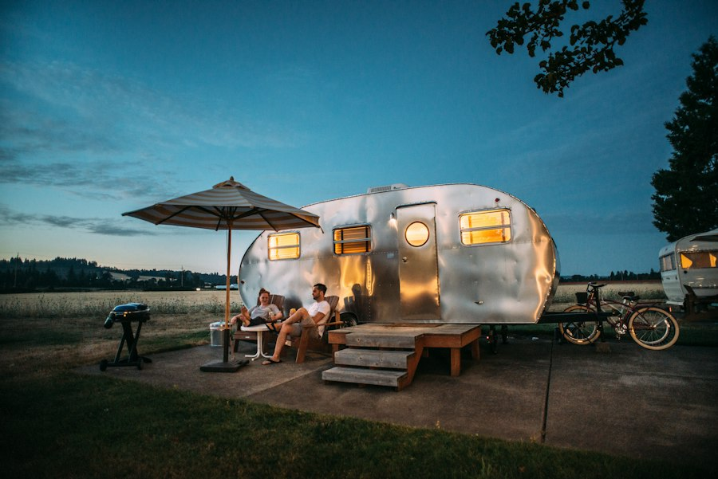
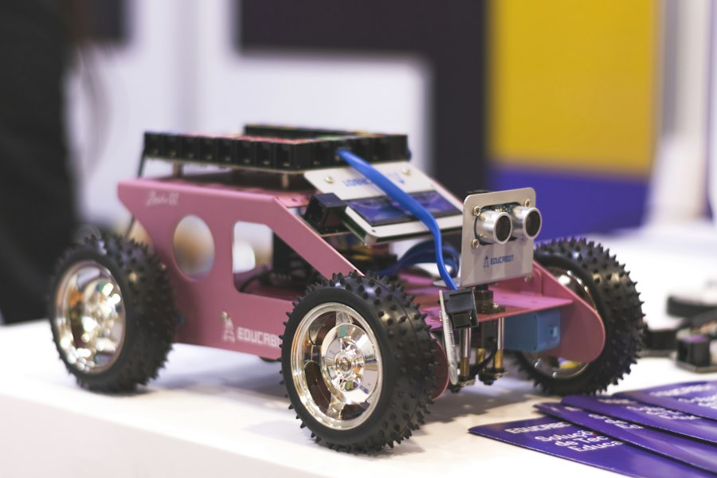
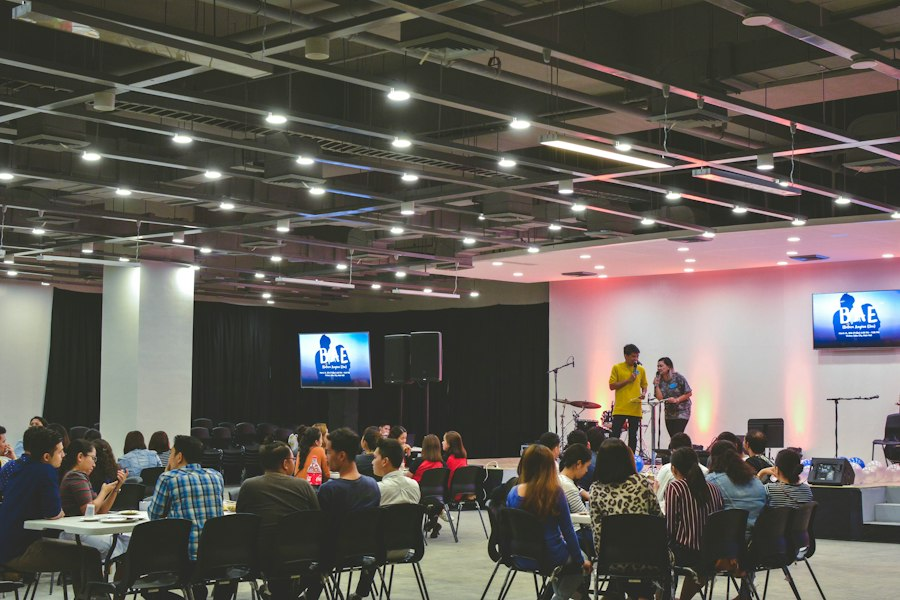
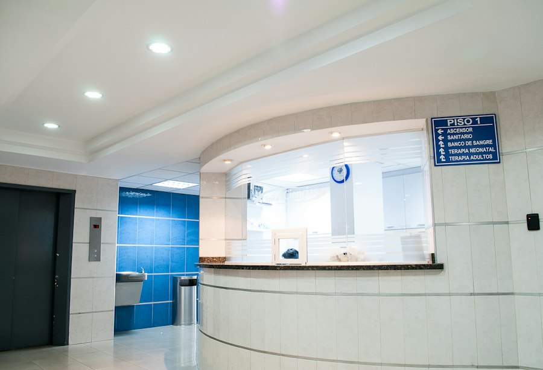
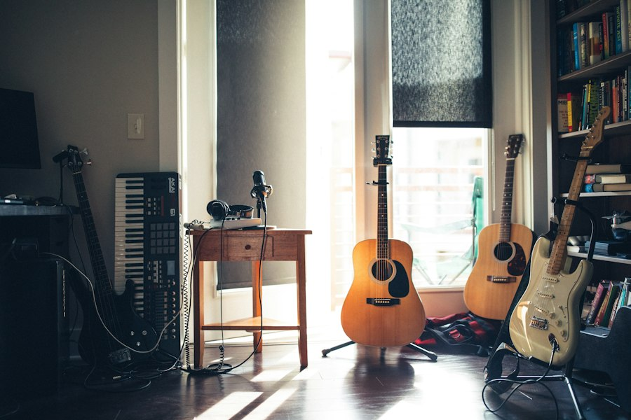

Kepemimpinan
Pramuka
Membentuk disiplin, kemandirian, dan jiwa kepemimpinan melalui kegiatan alam dan sosial.
- Pembina: Kak Budi Santoso
- Jadwal: Jumat, 14.00 - 16.00
Beranda / Ekstrakurikuler
Wadah untuk mengembangkan bakat, minat, dan karakter siswa di luar jam pelajaran.
Kembangkan Minat
Pilih kegiatan yang sesuai dengan minatmu. Setiap ekstrakurikuler dibimbing oleh pembina dan memiliki jadwal rutin.

Kepemimpinan
Membentuk disiplin, kemandirian, dan jiwa kepemimpinan melalui kegiatan alam dan sosial.
Olahraga
Meningkatkan kebugaran, kerja sama tim, dan sportivitas melalui latihan rutin.

Akademik
Merancang robot sederhana, belajar pemrograman, dan mengikuti kompetisi teknologi.

Kepemimpinan
Melatih kedisiplinan, kekompakan, dan rasa tanggung jawab dalam upacara bendera.

Sosial
Belajar pertolongan pertama, kesehatan, dan kegiatan sosial kemanusiaan.

Seni
Menumbuhkan kreativitas dan keberanian tampil melalui latihan vokal dan instrumen.
Sampaikan ide kegiatanmu kepada pembina kesiswaan. Kami terbuka untuk mengembangkan ekstrakurikuler baru.